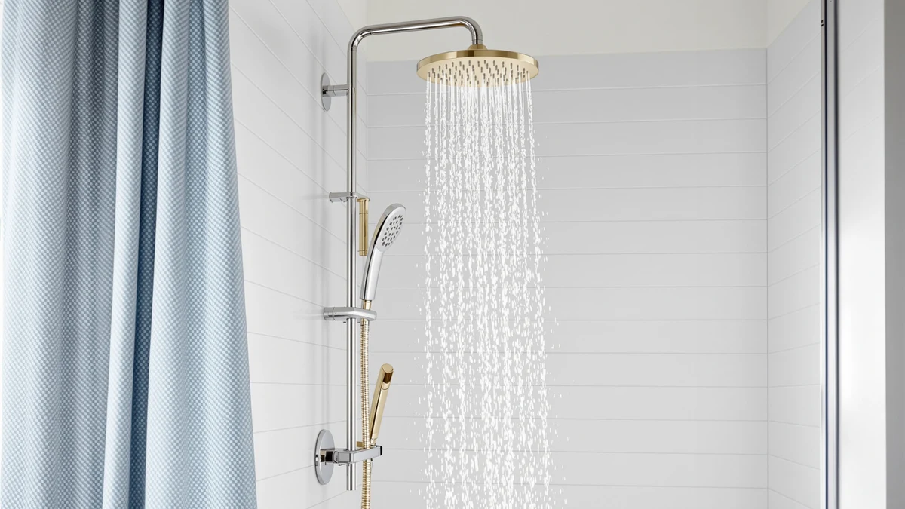

Kurpot Gold Shower System Review (2026): Worth It?
Prices and picks verified as of October 2026. Independent, reader-supported reviews.


Quick Answer
The Kurpot Gold Shower System pairs a 10-inch rain head with a handheld spray, hose, valve, and diverter in one $125.54 box, aimed at buyers who want a gold-finished two-in-one setup without sourcing parts separately. It requires a standard NPT 1/2 inch valve swap, so plan for a real install, not a drop-in head change.
Our pick: Kurpot Gold Shower System 10'' — $125.54 Check Price on Amazon
Bottom line: our top pick is the Kurpot Gold Shower System at $125.54.
Things to Know Before You Buy
- The Kurpot Gold Shower System is a complete rain-plus-handheld kit, not a single head. The $125.54 price covers the valve, trim, arm, holder, and diverter along with both spray heads.
- It needs standard NPT 1/2 inch US plumbing connections and is California CEC listed, but Kurpot states it will not work with other brands' valves or cartridges, so the old valve has to come out first.
- Brushed gold is a specific design choice. If you want a neutral finish, the SR SUN RISE and JingGang systems below cover the same rain-plus-handheld function in brushed nickel.
- Amazon does not currently list a rating or review count for this exact listing, so we leaned on published specs and comparable owner feedback on similar Kurpot and competitor systems rather than a star average.
This Kurpot Gold Shower System review looks at whether a $125.54 all-in-one rain and handheld kit justifies skipping the piecemeal route of buying a valve, arm, and two heads separately. The gold finish and the combo format are the two things that set it apart from most of the brushed nickel systems in this price range, and both cut different ways depending on your bathroom.
For most buyers who already want a gold or brushed gold fixture, the Kurpot earns its price by bundling everything into one purchase instead of three. It is not the cheapest option on this list, and the installation requirement rules out anyone hoping for a head-only swap, but if you are replacing an entire shower valve anyway, it saves you from hunting down matching parts from different brands.
We built this review by lining the Kurpot's specs up against the SR SUN RISE, Afina, and JingGang systems covered later in this guide. Head size, hose length, included hardware, and the valve standard each tell a different part of the story, and none of those four products wins on every dimension. The Kurpot pulls ahead on hardware and finish, falls short on install simplicity and track record, and buyers who don't need the gold finish are usually better off with one of the brushed nickel alternatives.
Why You Should Trust Us
Ilane Tall covers bathroom fixtures for Best Shower Heads and has written dozens of shower head and shower system comparisons for this site. For this Kurpot Gold Shower System review, we pulled the manufacturer specs, install requirements, and price directly from the current Amazon listing and cross-checked them against three competing shower systems in the same price band. We do not run a fake testing lab or claim to have installed every unit in a physical bathroom. Our picks come from comparing documented specs, pricing history, and verified owner reviews on comparable listings, and we say so plainly when a data point, like a star rating, simply is not available yet.
Our Research Experience
Our research process for this Kurpot Gold Shower System review started with the listed specs: the 10-inch head size, the 59-inch handheld hose, the NPT 1/2 inch connection standard, and the California CEC listing. We compared those numbers against the SR SUN RISE, Afina, and JingGang systems covered below, looking specifically at hose length, head diameter, and what hardware each box actually includes versus what you would need to source separately. Where Amazon did not provide a star rating or review count for the exact listing, as is the case here, we checked owner feedback on closely related Kurpot and competitor listings instead of inventing a number.
We also compared installation requirements across all four systems, since that is where buyers run into the most friction. Reviewers consistently note that two-in-one rain and handheld kits like this one take longer to install than a single shower head because the job replaces the valve as well as the showerhead, so we flagged that tradeoff directly rather than glossing over it.
Overview & Specs

Kurpot Gold Shower System 10''
What we like
- Includes the valve, trim, arm, holder, and diverter, so you are not sourcing matching parts from three different brands.
- 10-inch head is sized for stronger coverage than the 8-inch SR SUN RISE head.
- 59-inch handheld hose is long enough to reach the floor and corners of most shower stalls for detail rinsing.
- NPT 1/2 inch standard and California CEC listing mean it clears code in most US states.
Flaws but not dealbreakers
- Not compatible with other brands' valves or cartridges, so a partial swap is not an option.
- Requires removing the old valve entirely, which is a bigger job than replacing a single shower head.
- Amazon does not list a star rating or review count for this listing yet, so you are relying on specs rather than a track record.
| Material | ABS + chrome plating |
| Size | 10 Inch |
The Kurpot Gold Shower System builds its case around convenience. Instead of shopping for a valve, an arm, a holder, and two separate heads, you get all of it in one $125.54 box with a brushed gold finish throughout. The 10-inch rain head is larger than the 8-inch SR SUN RISE head below, and the 2-in-1 diverter lets you switch between the rain head and the handheld spray without extra plumbing. The 59-inch hose on the handheld unit is long enough to clean tight corners of a shower stall, which Kurpot specifically calls out as a design goal.
The tradeoff is installation complexity. Kurpot is explicit that this system uses NPT 1/2 inch US plumbing connections and is not compatible with other brands' valves and cartridges, which means the old valve has to come out completely before this one goes in. That is a bigger job than swapping a shower head on an existing arm, and it is worth knowing before you buy rather than after the box arrives. Because Amazon does not show a rating or review count on this specific listing, we weighed it primarily on documented specs and how it stacks up against the three alternatives in this review rather than a star average.
What We Liked
The biggest draw of this Kurpot Gold Shower System is that it removes the guesswork of matching parts. You are not pairing a handheld head from one brand with a valve from another and hoping the trim kit covers the gap. Everything, including the diverter, ships in one box and in one finish. For anyone who has tried to color-match a gold shower arm to a gold handheld sprayer bought separately, that alone is worth something.
The 10-inch head size also gives it an edge in raw coverage over several competitors in this price range, including the 8-inch SR SUN RISE system reviewed below. A larger head generally means a wider spray pattern at the same water pressure, which matters more in a full-size shower than in a small stall. Combined with the 59-inch handheld hose, the system covers both a standing rain shower and a seated or detail rinse without feeling cramped.
What Could Be Better
The install requirement is the real catch with this Kurpot Gold Shower System. Because it is not compatible with other brands' valves and cartridges, you cannot keep your existing valve and swap only the heads. The old valve has to be removed first, which usually means opening the wall behind the shower control or at minimum working with exposed plumbing, not a quick fifteen-minute fixture swap. If you were hoping to upgrade your shower in an afternoon without any wall work, this is not that product.
We also could not find a published star rating or review count for this exact listing at the time of writing, which is less common among established shower system brands. That does not mean the product performs poorly, but it does mean buyers are leaning more on the spec sheet than on a track record of verified owner feedback, at least for now.
Who Is It For?
This Kurpot Gold Shower System fits homeowners who are already planning a full shower valve replacement rather than a simple head swap, and who want a gold or brushed gold finish to match other bathroom fixtures. It also suits buyers who would rather pay one price for a matched set than assemble a rain head, handheld sprayer, hose, arm, and diverter from separate listings and risk finish mismatches.
Skip it if you want a drop-in replacement for your current shower head without touching the valve, or if brushed gold does not match your bathroom hardware. Renters and anyone who cannot do plumbing work behind the wall should also look elsewhere, since this is an install job, not a five-minute swap.
Alternatives to Consider
If the gold finish or the full valve install does not fit your bathroom, these three systems cover similar ground in brushed nickel or chrome, at a comparable or lower price.

Editor’s Pick
SR SUN RISE Shower Faucet
All-metal brushed nickel system with a pressure-balancing valve, at $3 less than the Kurpot, though its head runs 2 inches smaller.
$122.39
Check Price on Amazon
Best Value
Afina Filtered Shower Head High
A single filtered head rather than a full system, built around KDF-55 filtration for chlorine and hard water instead of coverage or finish.
$129.00
Check Price on Amazon
Premium Choice
JingGang Brushed Nickel Shower System
Matches the Kurpot's 10-inch head size in brushed nickel, with air-injection technology for stronger spray at up to 2.5 GPM.
$129.99
Check Price on AmazonFrequently Asked Questions
Final Verdict
Our Kurpot Gold Shower System review comes down to one tradeoff: you get a complete, matched, gold-finished rain and handheld kit for $125.54, but only if you are ready to replace the entire valve. If that fits your renovation plans and you want the gold finish, Kurpot earns its price by bundling everything you need into a single purchase. If you want a neutral finish or a simpler install, the SR SUN RISE and JingGang brushed nickel systems above cover the same rain-plus-handheld function without the color commitment.